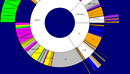

OverviewThe course will follow a general lecture/seminar style. For one day per week (Tuesdays), we will focus on visualization research. We will read research papers on some topic/theme, students will make presentations about the papers, and we will discuss. One goal is to try to develop ideas for new research projects. On the other day per week (Thursdays), we will focus on visualization system/application development. Students will learn how to develop interactive visualization tools using languages and libraries like Vega-Lite, D3, and JavaScript.Grades and AssignmentsGrades will be determined by a combination of assignments and measures as shown below.
Paper Presentation
Paper Summarization
Research Proposal
Class Engagement Important Note: If you are sick, please do not come to class. Covid is still quite rampant in society, and we do not need to be spreading the disease through our class. If you have the slightest inclination that you may be positive, please do not come to class. Here is the campus info about Covid from Stamps Health Services.
Programming HW Assignments Each HW will be graded out of 10 points. For each 24 hours late, 10% of the total grade (i.e., one point) will be deducted from an assignment's score. A HW can be turned in up to a week late unless otherwise notified. All the HW assignment details can be found in Canvas.
Textbook Academic IntegrityGeorgia Tech aims to cultivate a community based on trust, academic integrity, and honor. Students are expected to act according to the highest ethical standards. For information on Georgia Tech's Academic Honor Code, please visit http://www.catalog.gatech.edu/policies/honor-code/. Unless otherwise noted, all work should be strictly your own. Any student suspected of cheating or plagiarizing on an assignment will be reported to the Office of Student Integrity, who will investigate the incident and identify the appropriate penalty for violations. If you have any questions about these policies, just ask your instructor.The HW programming exercises are opportunities for each student to learn web-based visualization application development. Thus, what you submit for these assignments should be your own work, and they should be code that you have written. We do expect that you understand and can explain the homework solution that you submit. Students should be aware of the approved sources of assistance, help, and collaboration in our course. You can definitely use resources provided for everyone, including the instructor and teaching assistants. In particular, you should take advantage of our TA helpdesk/office hours to get personalized assistance on HW assignments. It also is permissible, and actually recommended, that you post questions about course concepts and HW assignments to Ed Discussion. Please refrain from posting code in public (readable by all) messages there, however. If you post code, make it a private message to the instructor and TAs. We also seek to create a culture where you can interact with and learn from other students in class as well. Interaction between students at a conceptual, high-level is permitted. You can discuss course concepts and HW assignments broadly, that is, at a conceptual level to increase your understanding. If you find yourself dropping to a level where specific code is being discussed for a HW, that is going too far. Those discussions should be reserved for the instructor and TAs. In addition to what is allowable, it is important for you to understand what is not permitted in our class. Sharing code, either an entire program or even just a portion of a program, between students is not allowed. Taking/Receiving assignments from other classmates, being given a homework solution, or downloading completed assignments from websites are considered plagiarism and are not allowed. These are activities that are simply meant to earn a score, not understand our course material. Similarly, you should not give (email, IM, etc) or even show a copy of your code, or a portion of your code to another student. In this course, giving code is considered just as bad as receiving code, so you must not succumb to other student's requests to see your program(s). If you are caught doing any of the prohibited activities above, you will be dealt with according to the GT Academic Honor Code and the incident will be submitted to the Office of Student Integrity. Excused AbsencesFrom time to time, circumstances such as an excused school absence (athletics, competition, conference, etc.), an illness/sickness, a family emergency, or other such circumstances may prevent a student from completing an assignment or assigned work. In the event of one of these circumstances, the student is responsible for contacting the Office of the Vice President and Dean of Students as soon as possible to report the issue, conflict, or emergency, providing dated documentation and requesting assistance in notifying their instructors. (See http://www.catalog.gatech.edu/rules/4/). You should NOT go to your instructor first with such documentation. Instead, documentation such as medical forms will be handled confidentially within the Office of the Vice President and Dean of Students and their office will inform a decision as to whether communication with instructional faculty is appropriate. If this can all be done beforehand then you should get written confirmation of the approved absence from the Registrar's office and notify the instructor prior to the day(s) of the absence. Clearly, some circumstances such as medical emergencies do not allow for that, so they can be handled after the fact. Accommodations for Students with DisabilitiesIf you are a student with learning needs that require special accommodation, contact the Office of Disability Services at (404) 894-2563 or http://disabilityservices.gatech.edu/, as soon as possible, to make an appointment to discuss your special needs and to obtain an accommodations letter. Please also e-mail me as soon as possible in order to set up a time to discuss your learning needs. |